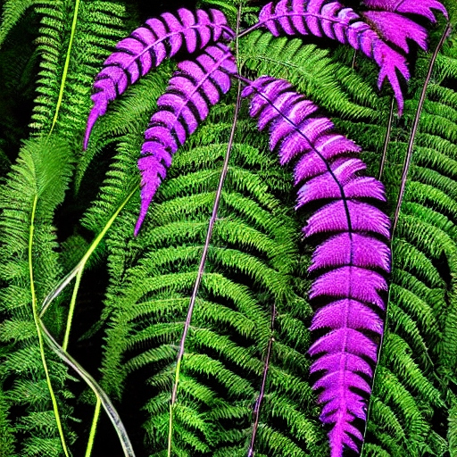
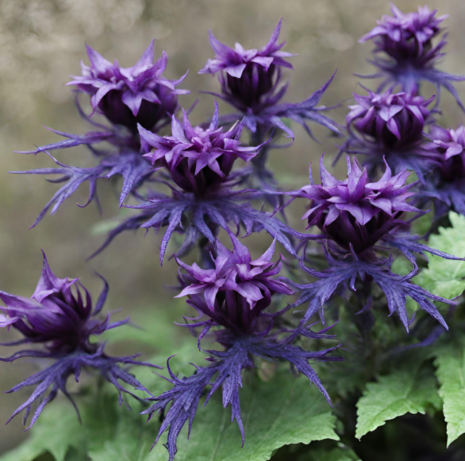

Flora
Description: These towering cacti store water within their thick stems and survive the intense heat of Aurelia's surface. Their lifespan ranges from 50 to 100 Earth years.
Planet: Aurelia

Description: These delicate flowers float gracefully in the air, their petals shimmering in various hues of blue and purple. They thrive in the moist, temperate climate of Veridia Prime and have a lifespan of 10 Earth years.
Planet: Viridia Prime

Description: These towering kelp forests sway gently in the currents of Cerulea's oceans, providing habitat for a diverse array of marine life. They can live for up to 50 Earth years.
Planet: Cerulea

Description: These delicate flowers bloom beneath the icy surface of Eclipta, their petals emitting a soft, bioluminescent glow. They thrive in the subzero temperatures and have a lifespan of 20 Earth years.
Planet: Eclipta

Description: The Lumina Vine is a bioluminescent plant species that grows in tangled masses throughout the jungle canopy. Its elongated leaves emit a soft, ethereal glow during the night. They thrive in the humid, shaded environment of the jungle canopy, often entwining itself around the trunks of towering trees. Each individual vine can live for several Chalupaxian decades, with new shoots continuously sprouting from the main vine.
Planet: chalupax

Description: The Gloomsprout Fern is a unique fern species that flourishes in the dimly lit understory of Chalupax's jungle. Its fronds are a deep shade of violet, and they exude a faint, musky aroma. They are typically found in areas where sunlight struggles to penetrate the thick foliage, such as deep ravines or beneath dense tree canopies. Gloomsprout Ferns have a relatively short lifespan, typically lasting only a few Chalupaxian years before undergoing senescence and being replaced by new growth.
Planet: chalupax

Description: The Whispering Willow is a towering tree with pale, silvery bark and cascading foliage that rustles with an otherworldly whispering sound. Its leaves shimmer with a faint, ethereal glow. They thrive in the mist-shrouded forests and marshy swamps of Tozathadax, where it forms dense groves that seem to sway and murmur with unseen voices. Each Whispering Willow can live for hundreds of standard Tozathadaxian years, serving as ancient sentinels of the planet's mysterious landscapes.
Planet: tozethadax

Description: The Grumroot Flower is a creeping plant species with thick, gnarled tendrils and deep purple foliage that seems to absorb light rather than reflect it. They bloom in shades of indigo and violet. They flourish in the dimly lit depths of Tozathadax's cavern systems, where they cling to rocky surfaces and creep along the damp, shadowy corridors. Grumroot Flowers have an incredibly slow growth rate and can survive for millennia, slowly spreading their tangled roots throughout the subterranean realms of the planet.
Planet: tozethadax

Description: The Coralite Grove is a vast, interconnected network of bioluminescent coral formations that span miles across Aquaria's ocean floor. Its vibrant hues of blue, purple, and green create a mesmerizing underwater landscape. They flourish in the nutrient-rich waters surrounding Aquaria's underwater cities, forming intricate reefs and submerged forests that provide habitat and sustenance for a myriad of marine life. Individual coral colonies within the Coralite Grove can persist for centuries, continuously growing and branching out to form new colonies over time.
Planet: Aquaria
Description: The Aquafern is a delicate underwater plant with translucent fronds that sway gently in the ocean currents. It absorbs sunlight through its iridescent leaves, which emit a soft, ethereal glow. They thrive in the shallow coastal regions and sunlit shallows of Aquaria, where it forms underwater meadows and dense clusters along rocky outcrops. Aquaferns have a relatively short lifespan, typically lasting several standard Aquarian years before reproducing and regenerating through spores and fragments.
Planet: Aquaria

Description: The Sunburst Bloom is a vibrant flower with petals that unfurl in the morning sunlight, emitting a radiant burst of color. Its nectar is sought after by pollinators and is said to have medicinal properties. They thrive in the open meadows and grasslands of Terra Nova, where they blanket the landscape in a kaleidoscope of hues during the blooming season. Individual blooms last for several standard Terran days before withering and regenerating from the plant's extensive root system.
Planet: Terra Nova

Description: The Terra Vine is a climbing plant with thick, succulent leaves and delicate tendrils that reach out to grasp nearby surfaces. It produces clusters of small, bell-shaped flowers that exude a sweet, floral scent.They are found in the shaded understory of Terra Nova's forests, where they climb trees and rocky outcrops in search of sunlight. Terra Vines have a relatively long lifespan, persisting for several standard Terran years as they slowly creep and twine their way through the forest canopy.
Planet: Terra Nova